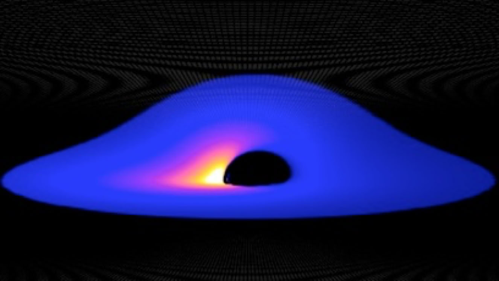
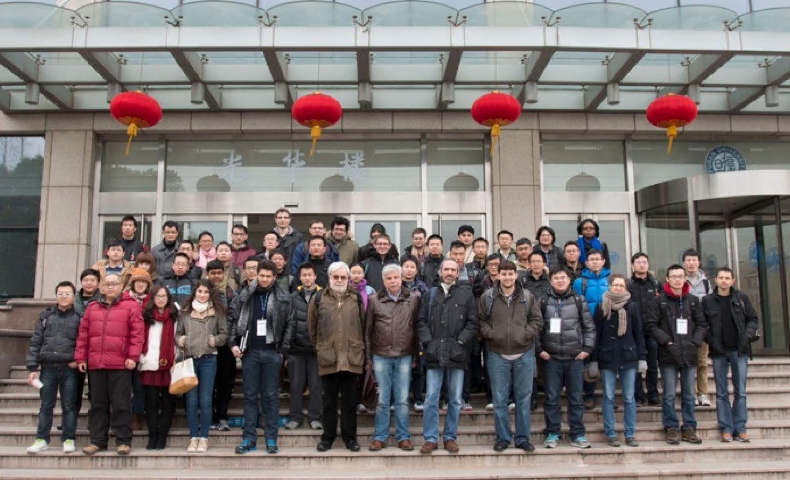

Fudan Winter School
on Astrophysical Black Holes
10-15 February 2014 Fudan University (Shanghai, China)

Black holes are very fascinating and peculiar objects. According to General Relativity, uncharged black holes are completely specified by only two parameters, the mass M and the spin angular momentum J. In the last 40 years, we have discovered at least two classes of astrophysical black hole candidates: stellar-mass objects in X-ray binary systems and super-massive black hole candidates at the center of every normal galaxy. The mass of these objects can be inferred by robust dynamical measurements, by studying the orbital motion of gas or individual stars around them. The determination of the spin J is much more difficult and it is a hot topic of contemporary astrophysics. Then, there are still many open questions: What is the origin of the jets produced in the region around these objects? How could super-massive black holes become so heavy? Are these objects the Kerr black holes predicted by General Relativity? All our open questions may be addressed by studying the properties of the electromagnetic radiation emitted in the accretion process and, hopefully in a not distant future, by observing the gravitational waves emitted by these systems.
This school consists of series of lectures on specific topics given by experts in the field and some short research talks. It is mainly intended for Master/PhD students and young postdocs working on high energy astrophysics, both for theorists and for observers. We plan also to arrange a few sessions for short presentations given by young participants.
Lecturers:
Tomaso Belloni (INAF - Osservatorio Astronomico di Brera)
Black Hole Binaries
Kostas Kokkotas (Eberhard Karls Universität Tübingen)
Gravitational Waves from Black Holes
Jean-Pierre Lasota (Institut d’Astrophysique de Paris)
Black Hole Accretion Disks
Daniele Malafarina (Fudan University)
Gravitational Collapse in General Relativity
James Steiner (Harvard-Smithsonian Center for Astrophysics)
Measuring the Mass and the Spins of Black Holes
Feng Yuan (Shanghai Astronomical Observatory)
Formation mechanisms of outflows and jets
Organizers:
Cosimo Bambi (Fudan, China), Chair
Lingyao Kong (Fudan, China)
Zilong Li (Fudan, China)
Dan Liu (Fudan, Shanghai)
Naoki Tsukamoto (Fudan, Shanghai)
Program
February 10 (Monday)
10:00 - 10:45 Registration
10:45 - 11:00 Opening remarks
11:00 - 12:00 Jean-Pierre Lasota (Lecture 1)
12:00 - 13:30 Lunch
13:30 - 14:30 Jean-Pierre Lasota (Lecture 2)
14:30 - 15:30 Tomaso Belloni (Lecture 1)
15:30 - 16:00 Coffee break
16:00 - 17:00 Tomaso Belloni (Lecture 2)
17:00 - 18:00 Feng Yuan (Lecture 1)
February 11 (Tuesday)
10:00 - 11:00 Jean-Pierre Lasota (Lecture 3)
11:00 - 12:00 Tomaso Belloni (Lecture 3)
12:00 - 13:30 Lunch
13:30 - 14:30 Jean-Pierre Lasota (Lecture 4)
14:30 - 15:30 Feng Yuan (Lecture 2)
15:30 - 16:00 Coffee break
16:00 - 17:00 Feng Yuan (Lecture 3)
17:00 - 18:00 James Steiner (Lecture 1)
February 12 (Wednesday)
10:00 - 11:00 Jean-Pierre Lasota (Lecture 5)
11:00 - 12:00 Tomaso Belloni (Lecture 4)
12:00 - 13:30 Lunch
13:30 - 14:30 Feng Yuan (Lecture 4)
14:30 - 15:30 James Steiner (Lecture 2)
15:30 - 16:00 Coffee break
16:00 - 17:00 Discussion 1
17:00 - 18:00 Short talks (S. McGraw, S. K. Garain, L. Liang)
February 13 (Thursday)
10:00 - 11:00 Tomaso Belloni (Lecture 5)
11:00 - 12:00 Konstantinos Kokkotas (Lecture 1)
12:00 - 13:30 Lunch
13:30 - 14:30 Konstantinos Kokkotas (Lecture 2)
14:30 - 15:30 James Steiner (Lecture 3)
15:30 - 16:00 Coffee break
16:00 - 17:00 Daniele Malafarina (Lecture 1)
February 14 (Friday)
10:00 - 11:00 James Steiner (Lecture 4)
11:00 - 12:00 Konstantinos Kokkotas (Lecture 3)
12:00 - 13:30 Lunch
13:30 - 14:30 Konstantinos Kokkotas (Lecture 4)
14:30 - 15:30 Daniele Malafarina (Lecture 2)
15:30 - 16:00 Coffee break
16:00 - 17:00 Discussion 2
17:00 - 18:00 Short talks (W. Han, A. R. Khalife)
February 15 (Saturday)
10:00 - 11:00 James Steiner (Lecture 5)
11:00 - 12:00 Konstantinos Kokkotas (Lecture 5)
12:00 - 13:30 Lunch
13:30 - 14:30 Daniele Malafarina (Lecture 3)
14:30 - 15:30 Discussion 3
15:30 - 15:45 Concluding remarks
Participant List
Ablimit, Iminhaji (Nanjing University, China)
Atie, Tala (American University Beirut, Lebanon)
Bambi, Cosimo (Fudan University, China)
Belloni, Tomaso (INAF Osservatorio Astronomico di Brera, Italy)
Cao, Zhoujian (Institute of Applied Mathematics/CAS, China)
Chen, Hsuan Ju (National Central University, Taiwan)
Chen, Lily (Henan Normal University, China)
Cheng, Huaqing (National Astronomical Observatory of China, China)
Garain, Sudip Kumar (Bose National Centre for Basic Science, India)
Geng, Jin-Jun (Nanjing University, China)
Giaccari, Stefano (Fudan University, China)
Gou, Jincheng (National Astronomical Observatory of China, China)
Grould, Marion (Paris Observatory Meudon, France)
Han, Wenbiao (Shanghai Astronomical Observatory, China)
Hobbs, Daniel (New York Institute of Technology Nanjing, China)
Hou, Saiyu (University of Science and Technology of China, China)
Jiang, Jiachen (Fudan University, China)
Khalife, Ali Rida (American University Beirut, Lebanon)
Kokkotas, Kostas (Eberhard Karls Universität Tübingen, Germany)
Kong, Lingyao (Fudan University, China)
Lasota, Jean-Pierre (Institut d’Astrophysique de Paris, France)
Li, Hong (Tsinghua University, China)
Li, Yaping (Xiamen University, China)
Li, Zilong (Fudan University, China)
Liang, Lichen (University of Victoria, Canada)
Liu, Dan (Fudan University, China)
Liu, Liang-Duan (Nanjing University, China)
Liu, Qiancheng (Nanjing University, China)
Liu, Xiaoking (University of Science and Technology of China, China)
Liu, Yue (Fudan University, China)
Malafarina, Daniele (Fudan University, China)
Marciano, Antonino (Fudan University, China)
McGraw, Sean (Ohio University, United States)
McKenzie, Gleniese (University of Science and Technology of China, China)
Modesto, Leonardo (Fudan University, China)
Ni, Jiayang (University of Science and Technology of China, China)
Niu, Shu (Purple Mountain Observatory, China)
Qiao, Erlin (National Astronomical Observatory of China, China)
Qin, Yuxiang (University of Science and Technology of China, China)
Qiu, Yanli (National Astronomical Observatory of China, China)
Rachwal, Leslaw (Fudan University, China)
She, Rui (Tsinghua University, China)
Steiner, James (Harvard-Smithsonian Center for Astrophysics, United States)
Sun, Jia-Yi (Tsinghua University, China)
Tsukamoto, Naoki (Fudan University, China)
Wei, Shao-Wen (Lanzhou University, China)
Xie, Fu-Guo (Shanghai Astronomical Observatory, China)
Xu, Jun (University of Science and Technology of China, China)
Yan, Guo (Henan Normal University, China)
Yang, Guang (University of Science and Technology of China, China)
Yang, Qixiang (Shanghai Astronomical Observatory, China)
Yu, Xiaofei (Xiamen University, China)
Yu, Zeliang (Tongji University, China)
Yuan, Feng (Shanghai Astronomical Observatory, China)
Zhang, Jian-Fu (Xiamen University, China)
Zhang, Yiyang (Fudan University, China)
Zheng, Xuechen (University of Science and Technology of China, China)
Zhou, Yu (Tsinghua University, China)
Zhou, Zhiqin (Peking University, China)
Zhu, Shifu (University of Science and Technology of China, China)
Zhu, Yiwei (Fudan University, China)
Group Photo
